정보통신산업기사 (2019-06-29 기출문제)
1과목: 디지털전자회로
1. 다음 중 전압, 전류, 저항의 보조단위를 정리한 것으로 맞지 않는 것은?
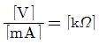
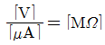
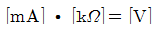
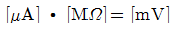
(정답률: 71%)

2. 다음 중 브리지 전파 정류회로의 특징으로 틀린 것은?
- 맥동(Ripple) 주파수는 전원주파수의 3배이다.
- 최대역전압(PIV)은 전원전압의 최대값[Vm]이다.
- 변압기의 직류자화가 없어 변압기의 이용률이 높다.
- 전원변압기의 2차측 권선의 중간탭이 불필요하며, 권선도 반이면 된다.
(정답률: 63%)
3. 다음 중 중간 탭형 전파 정류와 비교했을 때, 브리지형 전파 정류회로의 특징이 아닌 것은?
- 고압 정류회로에 적합하다.
- 변압기 자기 포화 현상이 거의 없다.
- 높은 출력 전압을 얻을 수 있다.
- 소형 변압기를 전혀 사용할 수 없다.
(정답률: 77%)
4. FET(Field Effect Transistor)의 특성으로 옳은 것은?
- 쌍극성 소자이다.
- 입력신호 전압을 게이트에 인가해서 채널 전류를 제어한다.
- BJT보다 저입력 임피던스를 갖는다.
- P채널 FET에 흐르는 전류는 전자의 확산현상에 의해 발생한다.
(정답률: 56%)
5. 다음 그림과 같은 전류궤환 Bias회로에서 IB는 약 얼마인가?(단, B=100, VBE=0.7[V], Vcc=20[V]이다.)
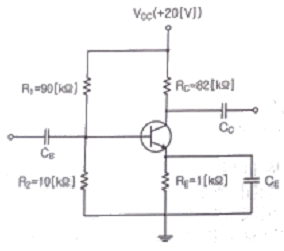
- 1.29[μA]
- 12.9[μA]
- 2.91[μA]
- 29.1[μA]
(정답률: 61%)
6. 트랜지스터의 바이어스회로 방식 중에서 안정도가 가장 높은 것은?
- 고정 바이어스
- 전압궤환 바이어스
- 전류궤환 바이어스
- 전압전류궤환 바이어스
(정답률: 65%)
7. 0.1[V]의 교류 입력이 10[V]로 증폭되었을 때, 증폭도는 몇 [dB]인가?
- 10[dB]
- 20[dB]
- 30[dB]
- 40[dB]
(정답률: 61%)
8. 다음 중 비정현파 발진기가 아닌 것은?
- 멀티바이브레이터
- 피어스 BE 발진기
- 블로킹 발진기
- 톱니파 발진기
(정답률: 62%)
9. 다음 중 CR형 발진기에 대한 설명으로 틀린 것은?
- LC동조회로를 사용하지 않는다.
- 발진주파수는 CR의 시정수에 의해 정해진다.
- C와 R을 사용하여 부궤환에 의해 발진한다.
- 저주파 발진 특성이 우수하다.
(정답률: 67%)
10. 다음 중 발진 주파수가 변하는 주요 요인이 아닌 것은?
- 전원 변압의 변동
- 주위의 온도 변화
- 부하의 변동
- 대역폭의 변화
(정답률: 67%)
11. 다음 중 교류 신호를 구성하는 기본적인 요소가 아닌 것은?
- 진폭
- 주파수
- 증폭도
- 위상
(정답률: 76%)
12. 다음 중 아날로그 진폭 변조 방식의 종류가 아닌 것은?
- DSB-LC(DSB-TC)
- DSB-SC
- FM
- SSB
(정답률: 73%)
13. 다음 중 펄스변조 방식이 아닌 것은?
- PCM
- PWM
- PPM
- PM
(정답률: 67%)
14. 동일 조건의 환경에서 PSK, DPSK 및 비동기 FSK 변조방식에 대한 각각의 오류확률에 따른 신호대 잡음비의 품질이 우수한 순서대로 나열한 것 중 옳은 것은?
- PSK ＞ DPSK ＞ FSK
- DPSK ＞ PSK ＞ FSK
- FSK ＞ PSK ＞ DPSK
- FSK ＞ DPSK ＞ PSK
(정답률: 61%)
15. 트랜지스터의 스위칭 시간에서 Turn-on 시간을 의미하는 것은?
- Fail Time
- Rise Time + Delay Time
- Rise Time
- Fail Time + Storage Time
(정답률: 76%)
16. 쌍안정 멀티바이브레이터 회로에서 저항에 병렬로 접속된 콘덴서의 주요 목적은?
- 증폭도를 높이기 위해
- 스위칭 속도를 높이기 위해
- 베이스 전위를 일정하게 하기 위해
- 이미터 전위를 일정하게 하기 위해
(정답률: 70%)
17. 8진수 67을 16진수로 바르게 변환한 것은?
- 43
- 37
- 55
- 34
(정답률: 66%)
18. J-K 플립플롭을 이용하여 T 플립플롭을 구현한 것으로 옳은 것은?
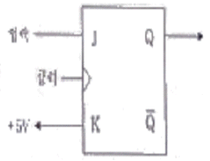
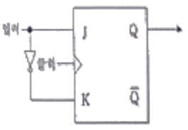
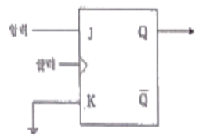
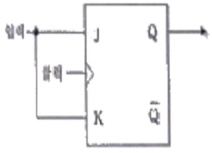
(정답률: 63%)
19. 다음 중 RS 플립플롭으로 구현된 D플립플롭 회로는?
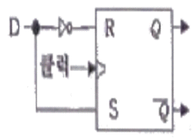
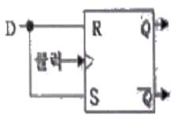
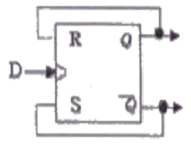
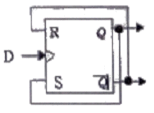
(정답률: 65%)
20. 다음 중 메모리에 대한 설명으로 틀린 것은?
- SRAM(Static RAM)과 DRAM(Dynamic RAM)은 전원이 차단되면 데이터가 소멸된다.
- DRAM은 SRAM에 비해 데이터 저장 용량을 높이는데 용이하다.
- SRAM은 DRAM에 비해 고속이다.
- SRAM과 DRAM은 일정 주기마다 재충전이 필요하다.
(정답률: 71%)
2과목: 정보통신기기
21. 정보통신시스템의 설명으로 맞지 않은 것은?
- 컴퓨터 상호간을 통신회선으로 접속하여 정보처리를 하는 오프라인 시스템이다.
- 이용자와 정보통신시스템에서 데이터의 입출력을 담당하는 데이터 단말기가 있다.
- 컴퓨터 상호간을 통신회선으로 접속하여 정보의 가공, 처리, 저장 등을 수행하는 정보처리시스템이 있다.
- 단말기 또는 컴퓨터 상호간을 유기적으로 결합하여 어떤 목적이나 기능을 수행하기 위해 연결하는 정보전송회선으로 되어 있다.
(정답률: 78%)
22. 전송 제어 장치(TCU)에서 입ㆍ출력 장치에 대해 직접적인 제어 및 상태를 감시하는 것은?
- 입ㆍ출력 제어부
- 입ㆍ출력 장치부
- 회선 접속부
- 회선 제어부
(정답률: 74%)
23. 정보 단말기의 기능 중 사람이 식별 가능한 데이터를 통신 장비가 처리 가능한 2진 신호로 변환하거나 그 역(逆)을 행하는 기능은?
- 신호 변환 기능
- 입ㆍ출력 기능
- 송ㆍ수신 제어 기능
- 에러 제어 기능
(정답률: 65%)
24. DTE와 DCE 사이의 인터페이스에 대한 중요 특성으로 틀린 것은?
- 절차적 특성
- 전기적 특성
- 기능적 특성
- 사회적 특성
(정답률: 79%)
25. 비트 단위의 다중화에 사용되고, 시간 슬롯이 낭비되는 경우가 많이 발생하는 다중화는?
- 주파수 분할 다중화
- 동기식 시분할 다중화
- 비동기식 시분할 다중화
- 코드 분할 다중화
(정답률: 70%)
26. 정보통신시스템의 통신회선 종단에 위치한 신호변환장치 중에서 디지털 전송로인 경우 단극성 신호를 쌍극성 신호로 변환이 가능한 장치는?
- 코덱
- 음향결합기
- 코드변환기
- 디지털 서비스 유니트
(정답률: 78%)
27. 디지털 케이블방송에서 케이블모뎀의 변ㆍ복조방식이 아닌 것은?
- 2FSK
- QPSK
- 64QAM
- 256QAM
(정답률: 64%)
28. PCM(Pulse Code Modulation)에 대한 설명으로 틀린 것은?
- 아날로그 데이터를 디지털 신호로 변환하여 전송하고 재생하는 방식이다.
- 표본화, 양자화, 부호화 단계로 구성된다.
- PCM 잡음에는 양자화잡음 등이 있다.
- 표본화음(Sampling Rate)은 원신호 최소 주파수의 1/2 이하로 하는 나이키스트(Nyquist) 이론을 바탕으로 한다.
(정답률: 76%)
29. 디지털 케이블방송의 모뎀에서 64QAM으로 변조하였다. 64-ary(또는 심볼)는 몇 비트로 구성되는가?
- 2
- 6
- 32
- 64
(정답률: 64%)
30. 다음 CATV의 구성 중 전송계의 구성요소가 아닌 것은?
- 분배선
- 간선증폭기
- 연장증폭기
- 헤드엔드
(정답률: 70%)
31. 다음 중 IP CCTV 시스템을 구성하는 장비로 가장 거리가 먼 장치는?
- VTR
- PoE 지원형 Switch
- UTP Cable
- 광 전송장치
(정답률: 57%)
32. 우리나라 지상파 디지털 HDTV에서 사용하는 영상 변조방식은?
- VSB
- 8VSB
- OFDM
- DVB
(정답률: 62%)
33. 전화기의 기능 중 상대방의 번호를 발생시키는 기구로 다이얼(Dial)이 있다. 다음 중 다이얼 신호가 아닌 것은?
- DP(Dial Pulse)신호
- PB(Push Button)신호
- MFC(Multi Frequency Code)
- HS(Hook Switch)신호
(정답률: 69%)
34. 다음 중 4세대 이동통신 서비스를 이용하기 위해 사용되는 단말기는?
- PCS 단말
- CDMA 단말
- PSTN 단말
- LTE Advanced 단말
(정답률: 82%)
35. 다음 중 위성통신에서 자유공간 전파손실에 대한 설명으로 옳은 것은?
- 전파거리의 제곱에 비례한다.
- 전자밀도의 제곱에 반비례한다.
- 파장의 제곱에 비례한다.
- 주파수의 제곱에 반비례한다.
(정답률: 70%)
36. 다음 중 위성통신을 위한 시스템 구성요소에 해당하지 않는 것은?
- 지구국
- 관제국
- 통신위성
- 위성발사체
(정답률: 79%)
37. 다음 중 멀티미디어 기기의 기능으로 맞지 않는 것은?
- 고사양 CPU
- 저해상도 디스플레이
- 고속지원
- 다양한 서비스 형태 이용
(정답률: 83%)
38. 다음 중 뉴미디어의 특징이 아닌 것은?
- 즉시성과 공평성
- 간편성과 수익성
- 개인화와 능동성
- 단일화와 단방향성
(정답률: 84%)
39. 다음 중 음악 압축에 사용되는 것으로 CD 수준의 음질로 압축하는 표준은?
- JPEG
- MPEG-2
- MP3
- MPEG-4
(정답률: 84%)
40. 스마트폰, 태블릿, 스마트 TV 등과 같이 기존의 기능에 컴퓨터의 기능이 부가된 기기를 무엇이라 하는가?
- 와이브로기기
- 블루투스기기
- 유선데이터기기
- 스마트기기
(정답률: 85%)
3과목: 정보전송개론
41. 16위상 변조방식을 사용하는 변복조기에서 단위 펄스의 시간간격이 T=8*10-4[s]일 때, 데이터 전송속도와 변조속도는 각각 얼마인가?
- 2,500[bps], 1,250[baud]
- 5,000[bps], 1,250[baud]
- 2,500[bps], 2,500[baud]
- 5,000[bps], 2,500[baud]
(정답률: 73%)
42. 다음 중 PCM-24/TDM 시스템에 대한 설명으로 잘못된 것은?
- 1 프레임의 비트수는 193개이다.
- 표본화 주파수로는 8[kHz]를 사용한다.
- 한 채널의 정보 전송량은 64[kbps]이다.
- 펄스전송속도는 2,048[Mbps]이다.
(정답률: 65%)
43. 다음 중 시분할 다중화 방식과 가장 관계가 적은 것은?
- 가드밴드(Guard Band) 설정
- 비트 삽입식(Bit Interleaving)
- 문자 삽입식(Character Interleaving)
- 점 대 점 연결방식(Point To Point)
(정답률: 71%)
44. 다음의 변조방식 중 전송과정에서 에러발생 가능성(Error Probability)이 가장 낮은 것은?
- ASK
- FSK
- QAM
- PSK
(정답률: 75%)
45. UTP 케이블을 이용하여 네트워크 구성 시 1[Gbps] 속도를 지원하는 케이블 등급은?
- Category 1
- Category 3
- Category 5
- Category 6
(정답률: 63%)
46. 무선랜 주파수로 사용되고 있는 5[GHz] 주파수의 파장은? (단, 전파속도 = 3*108[m/s])
- 16.6[m]
- 16.7[m]
- 0.⑤[m]
- 0.06[m]
(정답률: 65%)
47. 다음 중 광통신시스템에서 손실의 종류에 해당되지 않는 것은?
- 커넥터 손실
- 접속 손실
- 전반사 손실
- 광섬유 손실
(정답률: 70%)
48. 다음 중 외부 피복이나 차폐재가 추가되어 있어 옥외에서 통신기기간에 사용하기 가정 적합한 케이블은 어느 것인가?
- UTP
- STP
- ATP
- KTP
(정답률: 68%)
49. 다음 중 No.7 신호방식의 프로토콜 계층 구조로 틀린 것은?
- 메시지 전송부
- 신호접속 제어부
- 이용자부
- 주소부
(정답률: 55%)
50. 다음 중 혼합형 동기식 전송방식(Isochronous Transmission)의 특징이 아닌 것은?
- 일반적으로 비동기식 전송보다 전송속도가 빠르다.
- 동기식 전송과 비동기 전송의 특성을 혼합한 방식이다.
- 문자와 문자 사이에 휴지시간이 없다.
- Start bit와 Stop bit를 가진다.
(정답률: 74%)
51. 다음 중 HDLC 제어 필드의 구성으로 틀린 것은?
- 정보 프레임, 감시 프레임, 비번호제 프레임 등이 있다.
- 프레임의 동작 명령, 응답을 위한 제어 정보이다.
- 프레임의 종류, 순서번호 등의 제어 정보이다.
- 정보 프레임, 감시 프레임, 번호제 프레임 등이 있다.
(정답률: 57%)
52. 다음 중 OSI 7계층 참조모델의 각 계층별 설명으로 잘못된 것은?
- 제 2계층(물리 계층) : 물리적 연결, 활성화와 비활성화
- 제 3계층(네트워크 계층) : 통신망 내 및 통신망 사이의 경로 선택과 중계 기능
- 제 4계층(트랜스포트 계층) : 종단 상호간의 에러검출 및 서비스 품질 감시
- 제 5계층(세션 계층) : 회화 관리 및 동기 기능 수행
(정답률: 77%)
53. OSI 7계층 참조모델 중에서 물리 계층이 하는 역할을 바르게 나타낸 것은?
- 회선의 제어 규약을 정의
- 회선의 전기적 규약을 정의
- 회선의 다중화 규약을 정의
- 회선의 유지보수 규약을 정의
(정답률: 76%)
54. OSI 계층에서 통신망 연결에 필요한 데이터 교환 기능의 제공 및 관리를 규정하는 계층으로서 네트워크 연결관리, 경로 설정 등의 기능을 수행하는 계층은?
- 데이터링크 계층
- 네트워크 계층
- 전송 계층
- 세션 계층
(정답률: 77%)
55. 다음 응용 프로그램(응용계층 서비스) 중 전송 계층(Transport Layer) 프로토콜로 TCP를 사용하지 않는 것은?
- TFTP
- SMTP
- HTTP
- Telnet
(정답률: 64%)
56. 다음 중 서브넷 주소지정의 장점이 아닌 것은?
- 기관의 실제 물리 네트워크 구조에 맞게 호스트를 서브넷으로 묶을 수 있다.
- 서브넷 수와 서브넷별 호스트의 수를 기관별 필요에 맞게 맞출 수 있다.
- 서브넷 구조는 특정 네트워크의 내부 구분이 오직 기관 내에서만 보이도록 구현되어 있다.
- 라우팅 테이블 항목을 많이 넣어야 한다.
(정답률: 74%)
57. TCP(Transmisson Control Protocol)의 설명으로 틀린 것은?
- 연결형, 양방향성 프로토콜을 사용한다.
- 메시지 전송을 신뢰할 수 있고, 모든 데이터에 승인이 있다.
- 모든 데이터 전송을 관리하며, 손실된 데이터는 자동으로 재전송한다.
- 애플리케이션이 네트워크 계층에 접근할 수 있도록 하는 인터페이스만 제공한다.
(정답률: 68%)
58. 인터넷 IP 주소가 십진법으로 129.6.8.4 일 때, 이 주소는 어느 클래스에 속하는가?
- A클래스
- B클래스
- C클래스
- D클래스
(정답률: 77%)
59. HDLC 프레임의 데이터 블록의 앞 부분에 있는 3개의 필드 F(Start Flag), A(Address), C(Control)에 할당된 크기의 총합은 몇 비트인가?
- 24[bit]
- 21[bit]
- 18[bit]
- 12[bit]
(정답률: 74%)
60. 전송측이 전송한 프레임에 대한 ACK 프레임을 수신하지 않더라도, 여러개의 프레임을 연속적으로 전송하도록 허용하는 기법으로 옳은 것은?
- 슬라이딩 윈도우 흐름제어 기법
- 정지 대기 흐름제어 기법
- 슬라이딩 대기 흐름제어 기법
- 슬라이딩 정지 흐름제어 기법
(정답률: 74%)
4과목: 전자계산기일반 및 정보설비기준
61. 어떤 시프트 레지스터의 내용을 우측으로 3번 시프트하면 원래의 데이터 값에서 어떤 변화가 일어나는가?
- 원래 데이터 값의 8배
- 원래 데이터 값의 1/8배
- 원래 데이터 값의 3배
- 원래 데이터 값의 1/3배
(정답률: 66%)
62. 다음 중 10진수 13과 같지 않은 것은?
- 2진수 1101
- 5진수 23
- 8진수 15
- 16진수 C
(정답률: 72%)
63. 다음 중 정보의 단위가 작은 것에서 큰 순으로 바르게 나열된 것은?
- 파일, 레코드, 필드, 문자, 데이터베이스
- 워드, 필드, 레코드, 파일, 데이터베이스
- 워드, 레코드, 파일, 필드, 데이터베이스
- 레코드, 필드, 파일, 문자, 데이터베이스
(정답률: 67%)
64. 다음 중 ASCII 코드에 대한 설명으로 옳은 것은?
- 자료를 전송할 때 8비트 중 1비트는 패리티 비트로 사용하고 나머지 7비트로 27=128가지 문자를 표현할 수 있는 코드이다.
- 영자나 특수 문자까지 확대하기 위해 6비트를 사용하며, 2비트는 Zone 비트이고, 4비트는 수치비트로서 26=64가지 종류의 문자를 표현할 수 있는 코드이다.
- 8비트를 사용하여 28=256가지의 넓은 범위의 문자를 표현할 수 있어 현재 범용으로 사용되는 코드이다.
- 순 2진수 표현 형태로 문자를 나타낼 수 있으며, 자리수마다 가중치로서 계산하여 사용하는 코드이다.
(정답률: 65%)
65. 다음 중 운영체제 제어 프로그램에 속하는 것으로 알맞게 구성된 것은?
- 감시 관리 프로그램, 데스크 관리 프로그램, 시스템 편집 프로그램
- 태스크 관리 프로그램, 데이터 관리 프로그램, 작업 관리 프로그램
- 작업 관리 프로그램, 언어처리 프로그램, 유틸리티 프로그램
- 유틸리티 프로그램, 언어처리 프로그램, 시스템 편집 프로그램
(정답률: 60%)
66. 다음 보기는 시스템 소프트웨어 구성 프로그램 중 어떤 것을 설명하고 있는가?
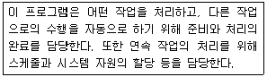
- 작업제어 프로그램
- 감시 프로그램
- 언어번역 프로그램
- 서비스 프로그램
(정답률: 77%)
67. 다음 중 일반 컴퓨터 형태가 아닌 주로 회로 기판 형태의 반도체 기억 소자에 응용 프로그램을 탑재하여 컴퓨터의 기능을 수행하는 시스템은?
- 임베디드 시스템
- 분산처리 시스템
- 병렬 처리 시스템
- 멀티 프로세싱 시스템
(정답률: 73%)
68. 하나의 프로세서 안에서 여러 개의 프로그램을 처리하는 방식을 무엇이라고 하는가?
- Multi Processing
- Multi Programming
- Distributed Processing
- Real Time Processing
(정답률: 68%)
69. 다음 Processing Scheduling 정책 중 현재 작업 중인 프로세스를 중단시키고, 남은 시간이 가장 짧은 JOB을 우선적으로 처리하는 방식은?
- FIFO
- RR
- HRN
- SRT
(정답률: 70%)
70. 다음 중 직접 어드레스 지정 방식으로 Jump 명령을 올바르게 표현한 것은?
- jump a, 100
- jump 100
- jump pc
- jump
(정답률: 66%)
71. 다음 중 정보통신망 응용서비스의 개발에 필요한 기술인력을 양성하기 위해 정부가 마련해야 하는 시책과 거리가 먼 것은?
- 국민에 대한 인터넷 교육의 확대
- 정보통신망 전문기술인력 양성기관의 설립, 지원
- 정보통신망 이용 교육 프로그램의 개발 및 보급지원
- 개인정보보호를 위한 설비 확충
(정답률: 76%)
72. 다음 정보통신공사업에 관련 벌칙 중 가장 엄한 것은?
- 공사업 경력수첩을 대여한 경우
- 정보통신기술자가 두 곳 이상의 공사업체에 종사하는 경우
- 정보통신공사와 감리를 함께 행한 경우
- 기술기준에 위반하여 설계를 한 경우
(정답률: 60%)
73. 다음은 방송통신재난관리기본계획 중 방송통신재난에 대비하기 위하여 필요한 사항을 나열한 것이다. 잘못된 것은?
- 우회 방송통신 경로의 확보
- 방송통신설비의 연계 운용을 위한 정보체계의 구성
- 피해보상에 관한 사항
- 피해복구 물자의 확보
(정답률: 68%)
74. 방송통신설비의 보호가 성능 및 접지에 관한 세부기술기준의 고시하는 기관은?
- 과학기술정보통신부
- 한국방송통신전파진흥원
- 중앙전파관리소
- 한국정보통신공사협회
(정답률: 65%)
75. 다음 중 해당공사의 총 공사금액이 70억원 이상 100억원 미만인 경우 감리원의 배치기준으로 가장 적합한 것은?
- 특급감리원
- 고급감리원
- 중급감리원
- 초급감리원
(정답률: 69%)
76. 다음 중 정보통신공사업 등록의 결격사유에 해당되지 않는 사람은?
- 파산선고를 받고 복권되지 않은 사람
- 정보통신사업법의 규정에 위반하여 벌급형의 선고를 받고 2년이 지나지 않은 사람
- 정보통신사업법의 규정에 의하여 등록이 취소된 후 1년 초과 2년 이내에 있는 사람
- 국가보안법 규정에 죄를 범하여 벌금형을 선고 받고 그 집행이 종료된 지 3년 초과 5년 이내에 있는 사람
(정답률: 64%)
77. 전기통신사업법에서 사용하는 용어에 대해 설명한 것이다. 괄호에 들어갈 내용으로 맞는 것은?
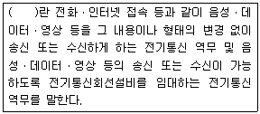
- 기간통신역무
- 정보통신역무
- 별정통신역무
- 부가통신역무
(정답률: 58%)
78. 정보통신사업법에서 발주자로부터 공사를 도급받은 공사업자를 무엇이라 하는가? (상한 허용치, 하한 허용치)
- 수급인
- 하수급인
- 용역업자
- 감리업자
(정답률: 53%)
79. 다음 중 선로의 도달이 어려운 지역을 해소하기 위해 사용하는 증폭 장치는?
- 전송장치
- 발전장치
- 제어장치
- 중계장치
(정답률: 81%)
80. 다음 중 정보통신공사업법령에 의한 정보통신공사에 해당하지 않는 것은?
- 아파트의 방송공동수신설비공사
- 물류 창고의 방범을 위한 CCTV 설치공사
- 우체국의 수전설비 설치공사
- 구청의 화상회의시스템 설비공사
(정답률: 76%)